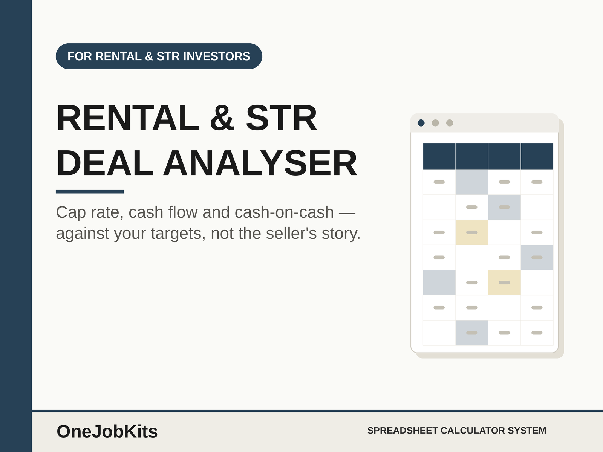

OneJobKits · Kit #32
Rental & STR Deal Analyser Spreadsheet — rental property deal analyzer spreadsheet

Run the deal before the deal runs you. A listing page tells you the price and the rent the seller hopes for; it does not tell you the net operating income after the expense lines sellers forget, the cash you actually have to bring, or whether the return clears the bar you set for yourself. A proper rental property deal analyzer spreadsheet answers those questions in minutes, the same way every time — and that repeatability is the real product here.
The pain it solves is the optimistic back-of-envelope deal. Insurance, taxes, vacancy, maintenance and management have a way of shrinking between the listing and the closing — and short-term rentals add their own fog: nightly rates quoted without occupancy, cleaning charged and cleaning paid quietly cancelling, platform fees appearing only in the payout. This workbook itemises the expenses on both sides — long-term and short-term in two dedicated analysers — and then does something most calculators refuse to do: it judges the deal only against the cap-rate and cash-on-cash targets you set yourself, and says plainly whether it meets both, meets one, or meets neither.
What this kit is: an educational calculator you own — one workbook in Excel and Google Sheets versions, worked example files with two complete fictional deals, and a short setup guide that defines every term it uses. What it is not: it is not financial, investment, tax or legal advice, it connects to no listings or lenders, and it never tells you to buy or pass on anything. The verdict compares a deal against your own targets; the decision stays yours.
Free download — start with the Deal Quick-Check
The FREE Deal Quick-Check is a 2-page fillable PDF (12 fields): the 5-number first pass on any rental deal — a rough NOI, cap rate, cash flow and cash-on-cash, set against the targets you write in yourself. It is the five-minute screen you run on a listing before a deal earns the full analysis: if the quick numbers miss your own bar by a mile, you have saved yourself an afternoon.
Download the free Deal Quick-Check (PDF)Get it on Gumroad instead
What the quick-check does not do: it is a rough first pass on paper, with the expense picture compressed to fit one page. The full system below itemises sixteen inputs including the expense lines sellers forget, calculates the loan and the monthly mortgage for you, runs the same discipline on short-term rentals, puts three deals side by side, and — in Pro — amortises the loan and tracks the portfolio you build.
What's inside the full system
- Deal analyser workbook (spreadsheet, 4 tabs; Excel + Google Sheets, no macros) — START HERE · Deal Analyser (long-term rental) — 16 inputs including the expense lines sellers forget; outputs: the calculated loan and monthly mortgage, total cash in, effective income, operating expenses, NOI, cap rate, monthly and annual cash flow, and cash-on-cash return, ending in a verdict against your own cap-rate and cash-on-cash targets: meets both, meets one, or meets neither · STR Analyser (short-term rental) — nightly rate, occupancy, average stay, cleaning charged and cleaning paid, platform fee and management in; booked nights, stays per year, revenue, costs, NOI, cap rate and cash-on-cash out, with the same verdict against your targets · Compare 3 Deals — three properties side by side on the headline numbers, labelled as the quick comparison it is
- Worked example files — both analysers filled in with complete fictional deals (shown below) and all three Compare columns filled, in Excel and Google Sheets versions
- Setup Guide (PDF, 3 pages) — plain definitions of NOI, cap rate and cash-on-cash, both worked examples walked through, and the five-minute deal run
- Pro ($39) adds the Portfolio & Amortisation Pack (workbook pair, Excel + Google Sheets, with its own worked example): a full 360-month amortisation schedule, a Portfolio Summary for up to 6 properties, and a Refinance Check — new payment, monthly saving, the months until the closing costs are earned back, and the interest difference, including the sheet's own warning that a lower payment on a fresh 30-year term is not the whole story
A filled example — so you can see the finished thing
The kit's worked example runs two fictional properties — one long-term rental, one short-term rental — through the analysers in full, and fills all three Compare columns. Both properties are invented; the arithmetic is the product working exactly as it will on your numbers:
| From the example file (fictional sample) | What the filled analyser shows |
|---|---|
| Maple Street Duplex — the deal | Long-term rental at $215,000 with rent of $2,150 a month, run through all 16 inputs including the full expense lines |
| Maple Street Duplex — the result | NOI $15,728.72 · cap rate 7.3% · cash-on-cash 5.2% |
| Maple Street Duplex — the verdict | Meets ONE of its targets — the honest middle answer, kept in the example on purpose: the sheet does not round a near-miss up to a pass |
| Gulf Breeze Condo — the deal | Short-term rental at $289,000, $165 a night at 65% occupancy, with cleaning, platform fee and management itemised |
| Gulf Breeze Condo — the result | NOI $25,376.83 · cap rate 8.8% · cash-on-cash 9.5% — and a verdict of meets both of its targets |
| Compare 3 Deals | All three columns filled from the same inputs, so the side-by-side habit — same numbers, same order, every time — is visible before you run a real deal |
Notice what the example refuses to do: the duplex is not rescued and the condo is not celebrated. One meets both targets, one meets one — and the sheet simply reports which, against the targets written at the top of the page.
Who it is for
Buyers analysing long-term rentals or short-term rentals — including investors weighing one against the other — who want every deal run through the same complete expense picture and judged against their own stated targets, in a file they own instead of a website calculator that vanishes. It suits first-deal buyers most of all: the setup guide defines every term in plain words, and the worked examples show a finished analysis before you run your own.
Who it is not for
Anyone looking for someone — or something — to tell them whether to buy a property. This sheet never does that, and no spreadsheet should. It is also not a property-management or bookkeeping system: it analyses deals before you buy, it does not run rentals after you own them, and it gives no financial, investment, tax or legal advice of any kind.
Questions buyers ask
- What does the verdict actually mean?
- You set two targets at the top of the analyser: the cap rate you require and the cash-on-cash return you require. The sheet calculates the deal and reports one of three verdicts — meets both targets, meets one, or meets neither. That is all the verdict ever says. It compares the deal against your own bar, never against the seller's story and never against a universal “good deal” standard, and it never tells you to buy or to pass.
- Which expense lines does the long-term analyser include?
- The full picture, including the lines sellers forget: the Deal Analyser takes 16 inputs covering the purchase and loan, the rent and vacancy, and the itemised operating expenses — tax, insurance, HOA, utilities, maintenance and management among them — before it calculates effective income, operating expenses and NOI. Deals usually die in the forgotten lines; this sheet makes you fill them in while the numbers are still cheap to walk away from.
- How is the short-term rental side different?
- The STR Analyser is built for how those deals actually earn: nightly rate, occupancy and average stay in, so booked nights and stays per year are calculated rather than assumed; cleaning charged to the guest and cleaning paid by you are separate lines, alongside the platform fee and management. Revenue, costs, NOI, cap rate and cash-on-cash come out the other side, with the same verdict against your own targets — so a long-term deal and a short-term deal can be judged by one standard: yours.
- What does Compare 3 Deals do — and not do?
- It puts three properties side by side on the headline numbers — price, income, NOI, cap rate, cash flow, cash-on-cash — using a simplified expense picture so the comparison stays on one screen. It is labelled inside the workbook as the quick comparison it is: use it to shortlist, then run the survivor through the full Deal Analyser or STR Analyser before you believe it.
- Excel or Google Sheets — and are there macros?
- Both. The analyser workbook ships in an Excel version and a Google Sheets version with the same tabs and formulas, and Pro's Portfolio & Amortisation Pack ships as the same pair. There are no macros anywhere — the mortgage, NOI, cap rate and verdict are ordinary spreadsheet formulas you can inspect cell by cell.
- What does Pro add?
- The Portfolio & Amortisation Pack, as a workbook pair with its own worked example. A full 360-month amortisation schedule showing the balance walk to zero; a Portfolio Summary for up to 6 properties — equity, cash flow and portfolio cap rate in one view; and a Refinance Check: the new payment, the monthly saving, how many months until the closing costs are earned back, and the interest difference — including the sheet's own warning that a lower payment on a fresh 30-year term is not the whole story.
- What does the free quick-check cover, and what does the full system add?
- The free Deal Quick-Check is a 2-page fillable PDF (12 fields): the 5-number first pass — rough NOI, cap rate, cash flow and cash-on-cash against your own targets — for screening a listing in minutes. The full system itemises the whole deal: 16 inputs with the loan and mortgage calculated, the STR analyser for nightly-rate deals, the 3-deal comparison, and worked examples of both kinds of deal analysed in full.
Prices
Base: $29 · Pro (adds the Portfolio & Amortisation Pack — 360-month amortisation schedule, 6-property portfolio summary and refinance check): $39 — one-time payment, digital download. No subscription; the files are yours.
Can't find the kit you need?
We build it. Ask us — first asker gets it at half the shelf price. Tell us the job at onejobkits.com and we will build the kit for it.
Related kits
Please know: this is an educational calculator only — not financial, investment, tax or legal advice, and no substitute for a qualified professional. It does arithmetic on the numbers you enter and never says buy or pass: the verdict compares a deal only against the cap-rate and cash-on-cash targets you set yourself. Check any real deal against current local figures and professional advice before acting. All example properties and data are fictional (the Maple Street Duplex and the Gulf Breeze Condo are invented, and the example file says so).